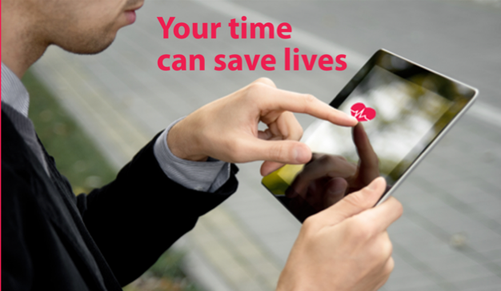

Unique Application?
There is a huge amount of different applications, usually free, usually in each area of activity there is a couple of already existing products. We need to focus on uniqueness and quality level to appear attractive. According to specialized medical websites – there is no need for high amount of this kind of services as few good sources with trusted and well known trade mark can do the job for entire market.
So again – quality, uniqueness and complexity are key factors here.
Target Location for Target Audience
Creating an application which allows you to send target location is not a difficult undertaking. Merging this undertaking with a platform that provides medical knowledge and professional advice is however, a bigger challenge.
The trick is to keep customers engaged, providing constantly proof of trust while creating “alive” environment. Building long lasting and trustworthy relationships with medical personnel is also a key factor in providing up to date and relevant professional advice and support.
European Union’s Role in Supporting the Tech Revolution
The European Union plays a supporting role for the information and technological revolution. It has created the open European market with fair and unified access for all companies, protection of consumer’s interest and common technical standards.
The European Union is in a stable situation after exiting recession last year (Ireland exited bailout December 2013). Economic growth and balanced risk will help to stabilise the labour market by slow increase by employment rate.